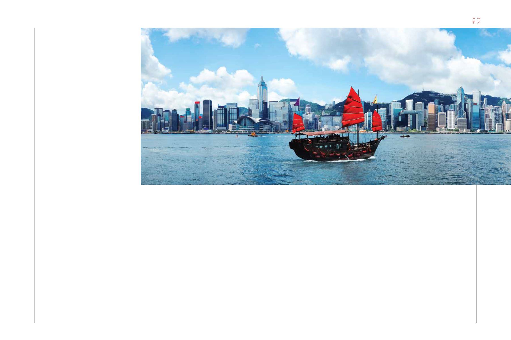

42-43 / 116
42-43 / 116


43
42
SOUTH CHINA ELITE
What are your current thoughts about
Hong Kong?
The decision in Hong Kong to vote down the
electoral reform package last year has caused Hong
Kong residents to think seriously about the future of
the territory. Perhaps this is an indication that the
gap is closing between the mainland and Hong Kong
despite a deadlock of political challenges.
How have recent ties been between
China, Hong Kong and Taiwan?
Mounting challenges for China’s President Xi
Jinping on the South China Seas and continued tension
amid the economic slowdown has not deterred China
from closing its political and cultural grip on both Hong
Kong and Taiwan. Last March, this was confirmed at the
China People’s Consultative Conference, one of the most
senior political advisory bodies in the congress, and the
National People’s Congress – despite the recent demands
from seniors within Hong Kong for an increasing degree
of economy and democracy. If applicable, this will mean
China will be balancing one country, three systems
if Taiwan fails to continue recognizing China’s 1992
consensus of One China. One can expect that Taiwan
will drag its heels, whilst China may slow economic
development and political communications with the
new leadership of Taiwan. One may also presume that
the mainland will tighten its grip on both Hong Kong
and Taiwan this coming year.
What should we be expecting from
China in the future?
China, I believe, will push forward towards closer
cooperation with countries not only within ASEAN,
but with the EU and almost all developing countries
including Africa and America. For example, bilateral
annual trade volume with the EU is expected to reach
US$1 trillion in a few years, but no later than 2020
which is a mutual goal.
Despite a slowdown this year, it seems manageable
if China maintains a 6% to 7% GDP year-on-year. The
same opportunities also apply in both central and
eastern Europe.
The impact of the recent global financial crisis and
the middle east migration of displaced refugees has
created distractions but creates even more debt in the
Eurozone, France, Greece, Spain and Turkey among
others. These countries are being hit even more so with
increasing labour strikes. Therefore Europe may delay
China and the EU reaching its trade goals, particularly
since the loss of labour overall has been rising in the EU
for the last six years.
Another indication of China’s rapidly rising role
in global leadership is the AIIB (Asian Infrastructure
Bank). Already half of all EU member states are
founding members. Equally impressive is the recent
agreement between the IMF and AIIB to consider
joint process. Additional joint investment funds will
follow to compliment the One Belt, One Road initiative
which, with the Chinese mega project of infrastructure
development, will certainly shroud the building of The
Great Wall. Despite the global economic slowdown, China
will continue to forge new partnerships and explore new
opportunities regionally and globally.
你對香港當前的情況有何看法？
香港立法會於2015年否決政改方案後，不少香港居民開
始認真地考慮特區的未來。儘管政治僵局持續，這或許證明
中港兩地之間的差距正在縮小。
中港台之間的關係最近有何發展？
國家主席習近平因南海問題及經濟增長放緩而備受
壓力，卻無損中國逐步收緊對香港及台灣的政治和文化影
響。2016年3月，全國政協及全國人大無視香港民主派元老
要求更大的經濟及民主自主權，就確認了上述的決心。如台
灣不繼續承認1992年達成的一個中國共識，意味中國將以一
國三制作平衡。不難想像，台灣可能會採取不合作態度，而
中國則可能放慢就台經濟發展及政治問題與台灣領導人對話
的步伐，並進一步收緊對港台兩地的控制。
中國在未來將有何舉措？
我相信中國將與東盟、歐盟乃至非洲及南美等大多數發
展中國家發展合作關係。例如，中歐的雙邊貿易額預計在未
來數年間將突破1萬億美元大關；於2020年前實現這目標，
是雙方的共同目標。
儘管經濟放緩，中國取得按年6%至7%的增長率，還屬控
制範圍之內。中歐及東歐多國亦擁有相同的機會。
全球金融危機的後遺影響以及中東戰亂導致的難民潮，
不僅對各國構成問題，更導致歐元區內法國、希臘、西班
牙，甚至歐元區外的土耳其等國債務惡化。愈加頻繁的工
潮，更令情況雪上加霜。因此，中歐之間要達致貿易目標，
可能需要更多時間，尤其是因為歐盟在過去6年間損失了不
少整體勞動力。
亞投行的成立，是中國在全球體系中領導能力提升的
又一標誌。歐盟各國中有近半是亞投行的創始成員，而國際
貨幣基金組織與亞投行最近達成協議考慮雙邊合作，更是令
人鼓舞。隨之而來的投資基金，可支持中國最近宣布的一帶
一路發展策略。中國投資的基建項目，其數目之多及規模之
巨，將可媲美長城。儘管全球經濟放緩，中國將繼續建立新
的合作夥伴關係，並在全球開拓新機遇。